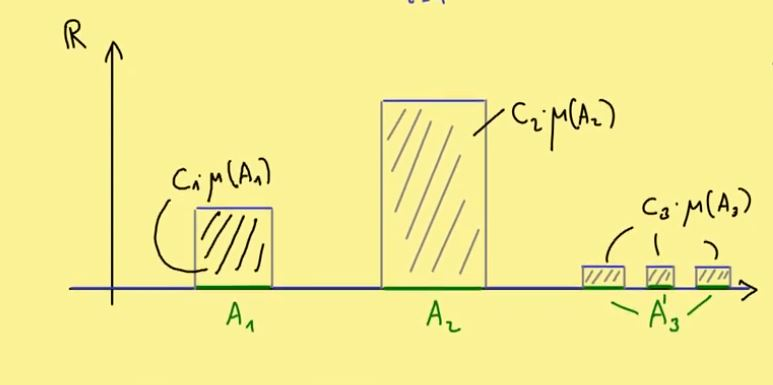
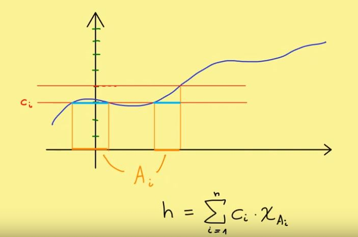

Chapter 6 Measure Theory
Instead of density, give probability to every event.
Definition
Let \(\Omega\) be set [state space]= set of all outcomes.
Each \(\omega \in \Omega\) is outcome.
Each \(A \in \Omega\)$ is event.
For rolling a die, \(\Omega ={1, 2, ...,6}\), whereas \(A={1,3,6}\). Thus, \(P(A)=\frac{1}{2}\).
\(P: 2^\Omega \rightarrow [0,1]\)
\(P(\Omega)=1, P(\varnothing)=0\)
\(P(A) \in [0,1]\)
If \(A\cap B=\varnothing\), then \(P(A\cup B)=P(A)+P(B)\)
If \(A_i\) are mutually disjoint, then \(P(\cup A_i)=\sum P(A_i)\)
6.1 Part 1
\(P(X)\): Power set \(X\)
Example: the set is \(X=\{ a,b \}\), and thus the power set is \(p(x)=\{ \varnothing, X, a,b \}\)
Definition: \(\mathcal{A} \subseteq P(X)\) is called a \(\sigma\)-algebra.
\(\sigma\)-algebra at least has two elements, namely empty set and full set: \(\varnothing\),\(X \in \mathcal{A}\)
\(A \in \mathcal{A} \rightarrow A^c: \in \mathcal{A}\)
- \(A_i \in \mathcal{A} \rightarrow \cup_{i=1}^\infty A_i \in \mathcal{A}\)
__\(A \in \mathcal{A}\) is called an \(\mathcal{A}\)-measureable set.
Example of \(\sigma\)-algebra:
\(\mathcal{A}= \{ \varnothing, X \}\)
\(\mathcal{A}= P(X)\)
6.2 Part 2
Easy to show:
\(\mathcal{A}_i\) \(\sigma\)-algebra on \(X\), \(in \in I(index set)\). Then, \(\cap \mathcal{A}_i\) is also a \(\sigma\)-algebra on \(X\).
Definition: For \(M \subseteq P(X)\), there is a smallest \(\sigma\)-algebra that contains \(M\). That is, \(\sigma\)-algebra is generated by \(M\).
\[ \sigma(M):=\cap_{\mathcal{A} \supseteq M}\mathcal{A}\] Example:
\[X=\{ a, b, c, d\}, M=\{ \{a\}, \{b\}\}\]
Note that, \(M\) is not a \(\sigma\)-algebra yet, and the smallest \(\sigma\)-algebra containing \(M\):
\[\sigma(M)= \{\varnothing, X=\{ a, b, c, d\},\{a\},\{b\},\{a,b\},\{b,c,d\},\{a,c,d\},\{c,d\}\}\]
Definition:
Let \(X\) be a topological space
(Let \(X\) be a metric space, or let \(X\) be a subset of \(\mathbb{R}^n\))
\(B(X)\) Borel \(\sigma\)-algebra on \(X\): THe \(\sigma\)-algebra generated by open sets.
\(B(X):=\sigma(\Im)\)
6.3 Part 3
What is a measure?
A measure is a \(\sigma\)-algebra. It can be either a power set or a subset.
Definition:
\((X, \mathcal{A})\) measurable space. \(\mathcal{A}\) is the subset of the set \(X\).
A map \(\mu: \mathcal{A} \rightarrow [0, \infty]\) is called a measure if it satisfies:
\(\mu (\varnothing)=0\)
\(\mu(\cup_{i=1}^\infty A_i)=\sum_{i=1}^\infty \mu(A_i)\) with \(A_i \cap A_j = \varnothing\) for all \(A_i \in \mathcal{A}\)
Definition: Measure space \[(X,\mathcal{A}, \mu)\]
Examples:
\(X, \mathcal{A}=P(X)\)
- For \(A\in \mathcal{A}\), counting measure:
\[\begin{cases} Count(A) & if A \; has\; finite \; elements \\ \infty & else \end{cases}\]
Calculation rules in \([0, \infty]\):
\(X+\infty := \infty \;\; for \; X \in [0, \infty]\)
\(X \cdot\infty := \infty \;\; for \; X \in (0, \infty]\)
\(0 \cdot\infty := 0 \;\; (for \; X \in (0, \infty])in \; most \; cases \; in \; measure \; theory!)\)
- Dirac measure for \(p \in X\)
\[\delta_p (A) \begin{cases} 1 &, p \in A \\ 0 &, else\end{cases}\]
- We search a measure on \(X=\mathbb{R}^n\)
\(\mu ([0,1]^n)=1\)
\(\mu(x+A)=\mu(A)\) for all \(x \in \mathbb{R}^n\)
6.4 Part 4
Search measure \(\mu\) on \(p(\mathbb{R})\) with
\(\mu([a,b])=b-a, b>a\)
\(\mu(X+A)=\mu(A), A \in p(\mathbb{R}), X \in \mathbb{R}\)
\(\rightarrow \mu\) does not exist.
Claim: Let \(\mu\) be a measure on \(p(\mathbb{R})\) with \(\mu([0,1])<\infty\) and (2) \(\rightarrow \mu=0\)
6.5 Part 5
Definition:
\((\Omega_1,\mathcal{A}_1), (\Omega_2,\mathcal{A}_2)\) measurable spaces
\(f: \Omega_1 \rightarrow \Omega_2\) measurable (\(w.r.t \; \mathcal{A}_1, \mathcal{A}_2\)) if \(f^{-1}(\mathcal{A}_1) \in \mathcal{A}_2\) for all \(\mathcal{A}_1 \in \mathcal{A}_2\).
Examples:
- (\(\Omega,\mathcal{A}\)), (\(\mathbb{R},B(\mathbb{R})\)): characteristic function (also indicator function)
\[\chi_A : \Omega \rightarrow \mathbb{R}\]
\[\chi_A (\omega) := \begin{cases} 1 &, \omega \in A \\ 0 &, else\end{cases}\]
For all measurable \(A \in \mathcal{A}\), \(\chi_A\) is a measurable map.
\[\chi_A(\varnothing)=\varnothing, \chi_A^{-1}(\mathbb{R})=\Omega\] \[\chi_A(\{ 1 \})=A, \chi_A^{-1}(\mathbb{0})=A^c\]
- (\(\Omega_1,\mathcal{A}_1\)), (\(\Omega_2,\mathcal{A}_2\)), (\(\Omega_3,\mathcal{A}_3\)) measurable spaces
\[\Omega_1 \rightarrow \Omega_2 \rightarrow \Omega_3\]
If both \(\Omega_1 \rightarrow \Omega_2\) and \(\Omega_2 \rightarrow \Omega_3\) are measurable, then \(\Omega_1 \rightarrow \Omega_3\) is measurable as well.
6.6 Part 6
Lebesgue integral
Lebesgue integral for step functions.
\[Measure \; space(X, \mathcal{A}, \mu)\]
Where,
\(X\) is a set.
\(\mathcal{A}\): collection of subset of \(X\): \(\sigma\)-algebra.
\(\mu\): \(\mathcal{A} \rightarrow [0, \infty]\).
In order to integrate some special function, we need measurable maps:
\[Measure \; maps \; f: X \rightarrow \mathbb{R}\]
Where, there is \(\sigma\)-algebra \(\mathcal{A}\) on the \(X\), whereas \(\sigma\)-algebra \(B\) for \(\mathbb{R}\). In other words, we can get:
\[f^{-1}(E) \in \mathcal{A} \; for \; all \; Borcel \; sets \; E \subseteq \mathbb{R}\]
For example:
\[\chi_A: X \rightarrow \mathbb{R}, A \in \mathcal{A}\] \[I(\chi_A):= \mu (A)\]
Simple functions (step functions, staircase functions, …)
For \(A_1, ... A_N \in \mathcal{A}\) and \(c_1,...,c_n \in \mathbb{R}\)
\[f(x)=\sum_{i=1}^n c_i \cdot x_{A_i}(x)\] 
Definition
\[S^{+}:=\{ f: X \rightarrow \mathbb{R}| f: simple \; function, f\geq0\}\]
Properties:
\(I(\alpha f + \beta g)=\alpha I(f) +\beta I(g)\), \(\alpha, \beta\geq 0\)
\(f \leq g \rightarrow I(f) \leq I(g) (monotonicity)\)

Definitions
\(f: X \rightarrow [0, \infty) measurable\)
\(\int f d(\mu):=sup \{ I(h) | h \in S^+, h \leq f \}\), in which, \(h = \sum_{i=1}^n c_i x_{A_i}\). We call this Lebesgue integral of \(f\) w.r.t \(\mu\). \(f\) is called \(\mu\)-integral if \(\int_x f d\mu < =\infty\)